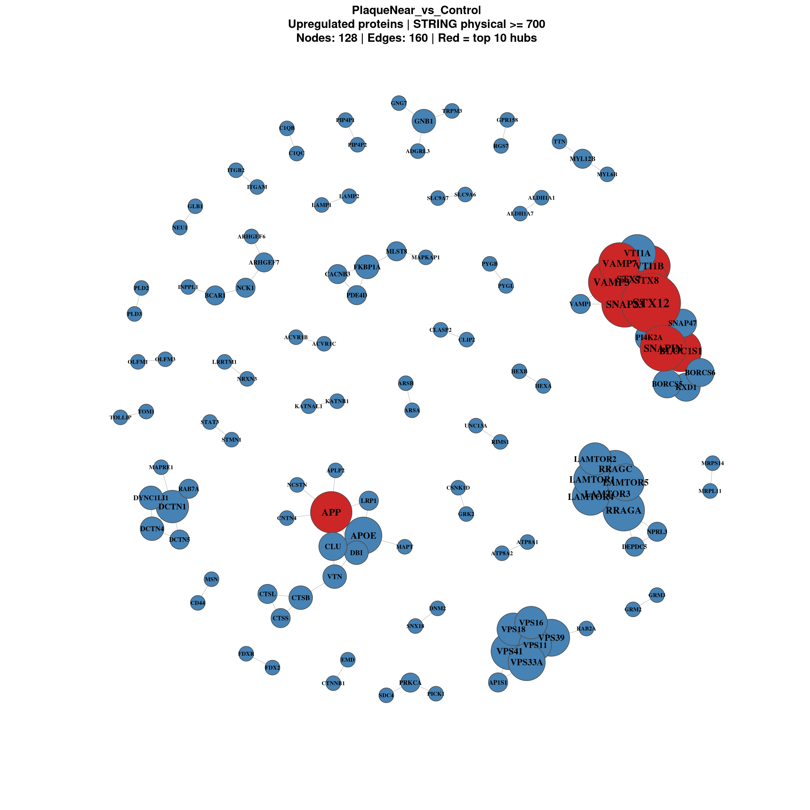
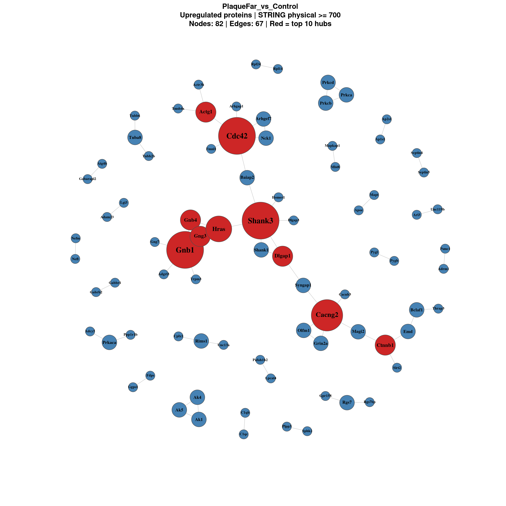
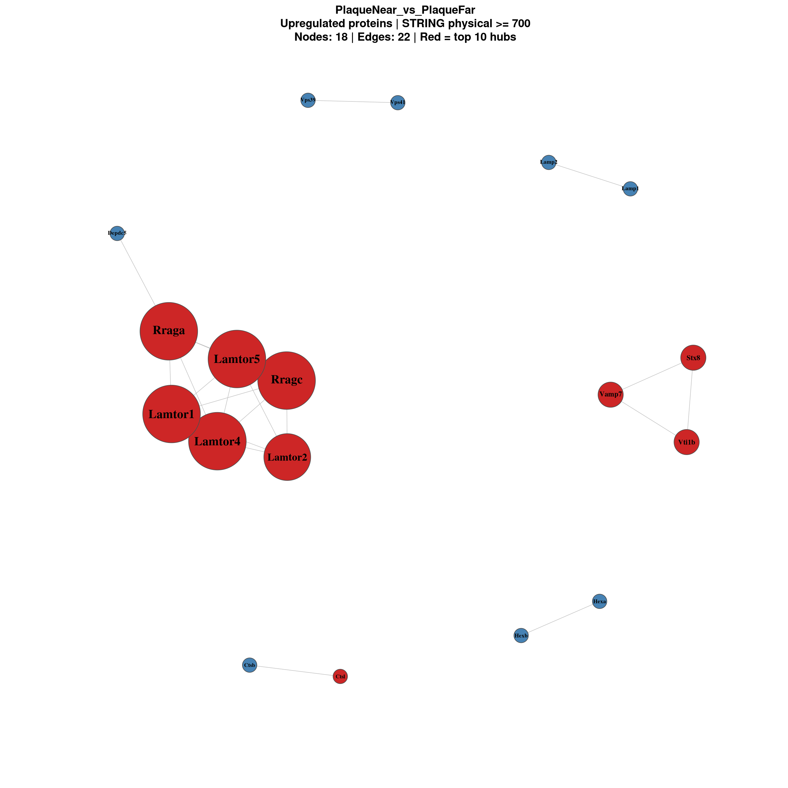
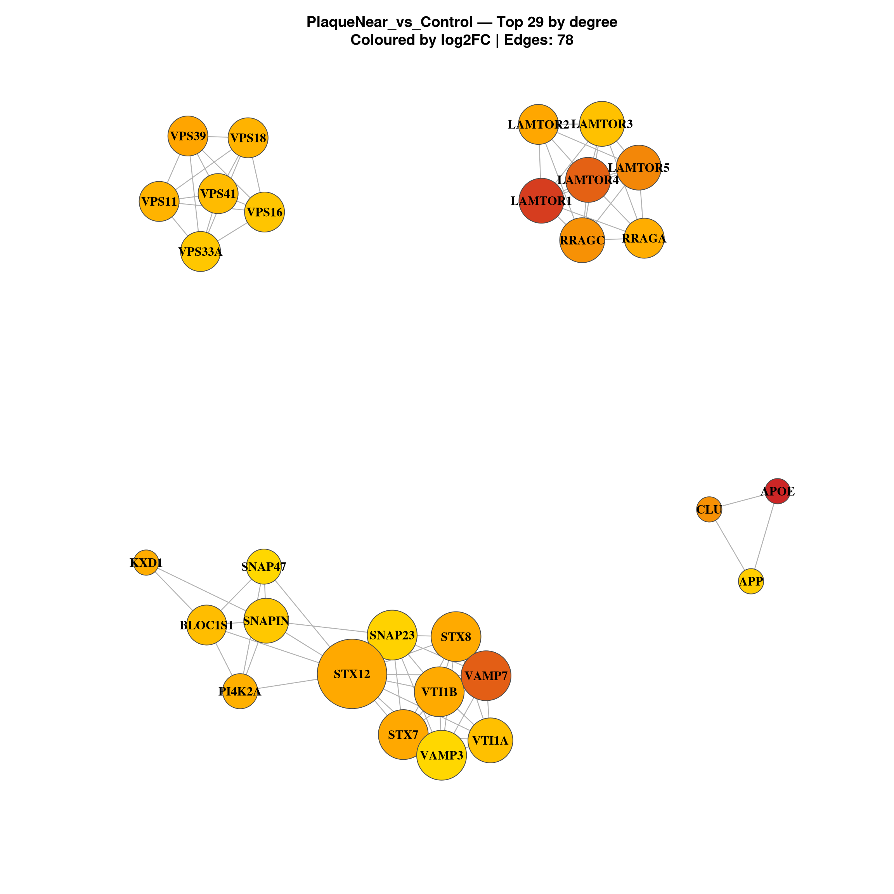
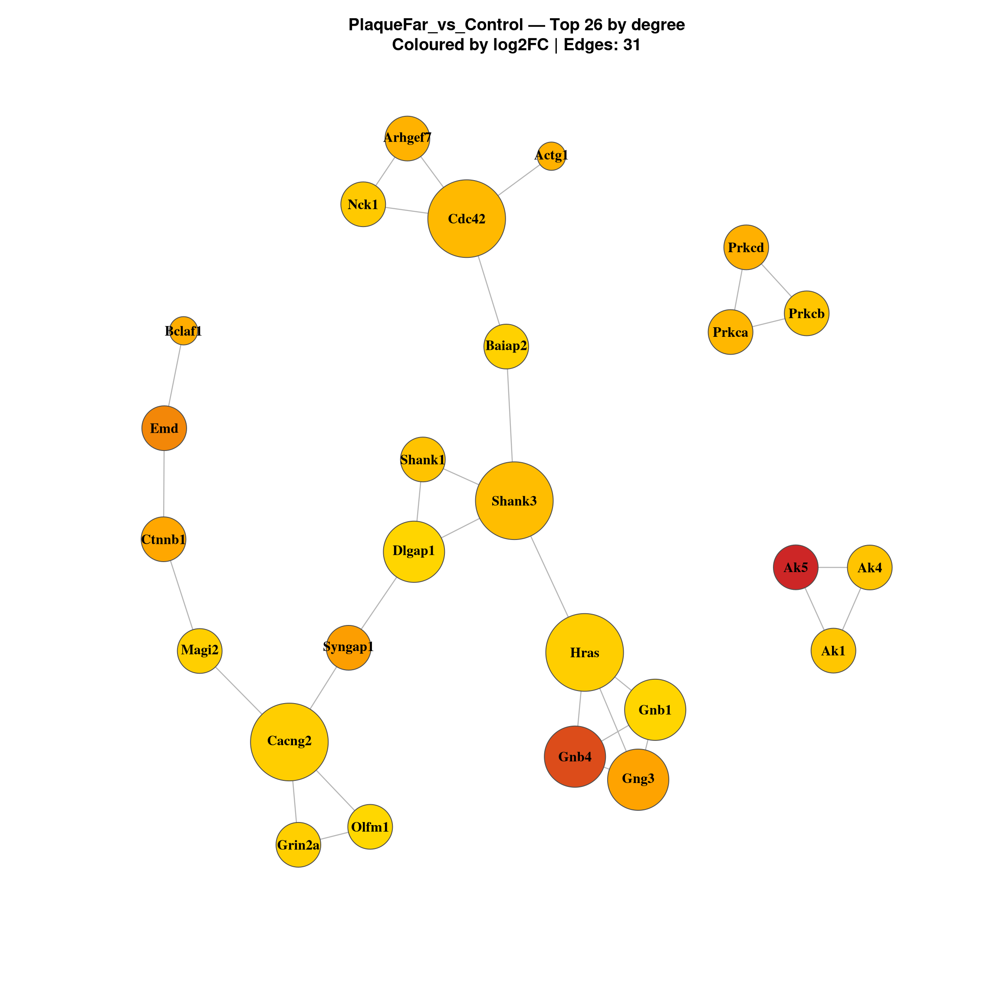
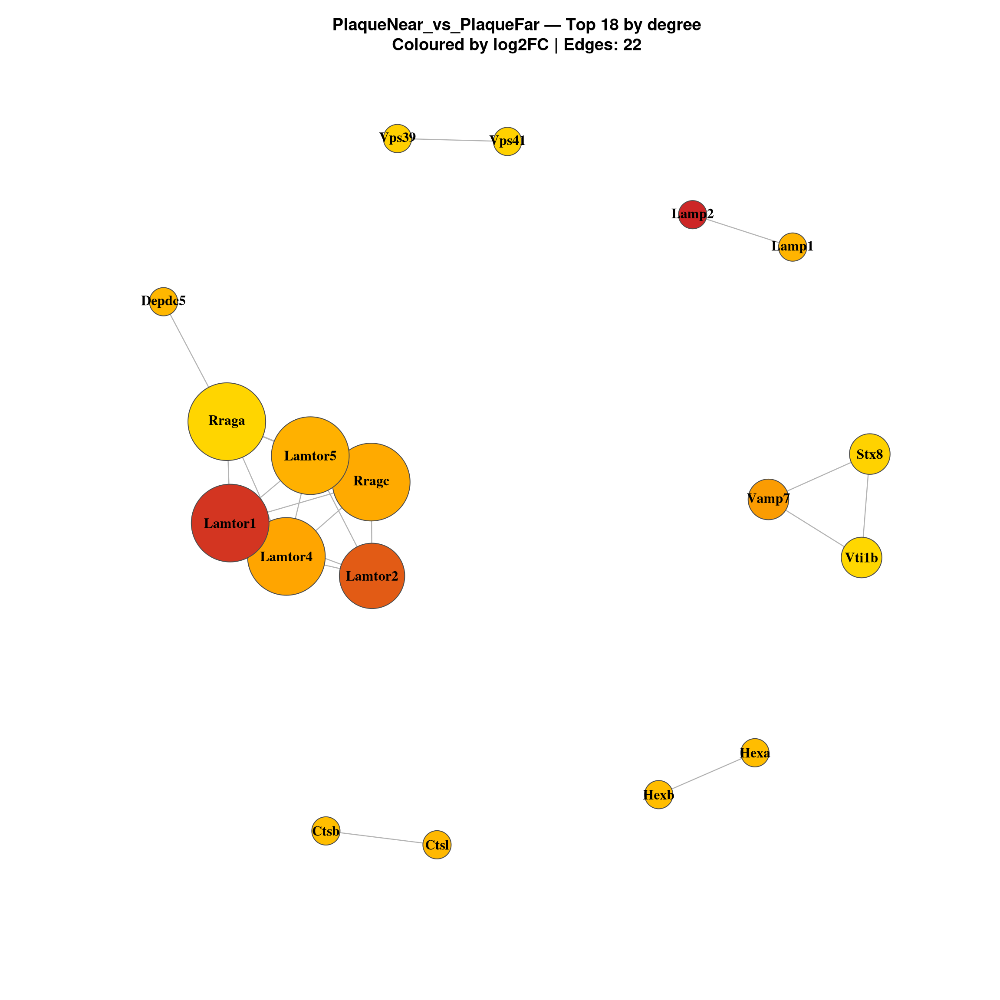

Code
suppressPackageStartupMessages({
library(data.table)
library(dplyr)
library(tidyr)
library(ggplot2)
library(ggrepel)
library(stringr)
library(STRINGdb)
library(igraph)
library(qs2)
})This script identifies protein-protein interaction networks for upregulated proteins in each MSstats comparison using STRINGdb. It identifies hub proteins by degree centrality and exports summary tables for downstream interpretation.
Workflow overview
suppressPackageStartupMessages({
library(data.table)
library(dplyr)
library(tidyr)
library(ggplot2)
library(ggrepel)
library(stringr)
library(STRINGdb)
library(igraph)
library(qs2)
})base_dir <- "/nemo/lab/destrooperb/home/shared/zanettc/millie_proteomics"
run_num <- "run3"
results_dir <- file.path(base_dir, "results", run_num)
objects_dir <- file.path(base_dir, "data", "processed", run_num)
ppi_dir <- file.path(results_dir, "PPI_networks")
dir.create(ppi_dir, recursive = TRUE, showWarnings = FALSE)
# Thresholds
FDR_CUTOFF <- 0.05
LOGFC_CUTOFF <- 0.5
STRING_SCORE <- 700res_df <- fread(file.path(results_dir, "Full_GroupComparison_Results.csv"))
clean_spec_raw <- fread(file.path(base_dir, "data/processed/run1/clean_spec_raw.csv"))
protein_dictionary <- clean_spec_raw %>%
dplyr::select(
Protein = PG.ProteinGroups,
Gene = PG.Genes,
Description = PG.ProteinDescriptions
) %>%
distinct()
# Map gene names and define significance categories
msstats_ready <- res_df %>%
filter(!is.na(adj.pvalue), is.finite(log2FC)) %>%
left_join(protein_dictionary, by = "Protein") %>%
mutate(
Gene = ifelse(is.na(Gene) | Gene == "", Protein, Gene),
Status = case_when(
adj.pvalue < FDR_CUTOFF & log2FC > LOGFC_CUTOFF ~ "Upregulated",
adj.pvalue < FDR_CUTOFF & log2FC < -LOGFC_CUTOFF ~ "Downregulated",
TRUE ~ "Not Significant"
)
)string_db <- STRINGdb$new(
version = "12.0",
species = 10090,
score_threshold = STRING_SCORE,
network_type = "physical"
)comparisons <- c("PlaqueNear_vs_Control", "PlaqueFar_vs_Control", "PlaqueNear_vs_PlaqueFar")
network_results <- list()
for (comp in comparisons) {
cat("\n============================\n")
cat(comp, "\n")
cat("============================\n")
# --- Filter upregulated proteins ---
sig_up <- msstats_ready %>%
filter(Label == comp, Status == "Upregulated") %>%
dplyr::select(Gene, log2FC, adj.pvalue) %>%
distinct(Gene, .keep_all = TRUE) %>%
as.data.frame()
cat("Upregulated proteins:", nrow(sig_up), "\n")
if (nrow(sig_up) < 5) {
cat("Too few proteins, skipping.\n")
next
}
# --- Map to STRING ---
mapped <- string_db$map(sig_up, "Gene", removeUnmappedRows = TRUE)
cat("Mapped to STRING:", nrow(mapped), "\n")
if (nrow(mapped) < 5) {
cat("Too few mapped, skipping.\n")
next
}
# --- Get interactions ---
interactions <- string_db$get_interactions(mapped$STRING_id)
cat("Interactions:", nrow(interactions), "\n")
# --- Build igraph object ---
if (nrow(interactions) > 0) {
g <- graph_from_data_frame(
interactions %>% dplyr::select(from, to, combined_score),
directed = FALSE,
vertices = mapped %>% dplyr::select(STRING_id, Gene, log2FC)
)
g <- simplify(g)
# Degree centrality
V(g)$degree <- degree(g)
cat("Nodes:", vcount(g), "| Edges:", ecount(g), "\n")
} else {
g <- NULL
cat("No interactions found.\n")
}
network_results[[comp]] <- list(
proteins = mapped,
interactions = interactions,
graph = g
)
}
============================
PlaqueNear_vs_Control
============================
Upregulated proteins: 465
Warning: we couldn't map to STRING 0% of your identifiersMapped to STRING: 462
Interactions: 320
Nodes: 462 | Edges: 160
============================
PlaqueFar_vs_Control
============================
Upregulated proteins: 313
Warning: we couldn't map to STRING 0% of your identifiersMapped to STRING: 310
Interactions: 134
Nodes: 310 | Edges: 67
============================
PlaqueNear_vs_PlaqueFar
============================
Upregulated proteins: 73
Mapped to STRING: 73
Interactions: 44
Nodes: 73 | Edges: 22 for (comp in names(network_results)) {
g <- network_results[[comp]]$graph
if (is.null(g) || ecount(g) == 0) next
# Remove isolated nodes (degree 0) for cleaner plot
g_plot <- delete_vertices(g, V(g)[degree(g) == 0])
if (vcount(g_plot) < 3) next
# Style
V(g_plot)$label <- V(g_plot)$Gene
V(g_plot)$size <- scales::rescale(degree(g_plot), to = c(5, 20))
V(g_plot)$label.cex <- scales::rescale(degree(g_plot), to = c(0.6, 1.3))
V(g_plot)$label.font <- 2
V(g_plot)$color <- "steelblue"
V(g_plot)$frame.color <- "grey30"
E(g_plot)$color <- "grey75"
E(g_plot)$width <- 0.8
# Highlight top 10 hubs
top_hubs <- names(sort(degree(g_plot), decreasing = TRUE))[1:min(10, vcount(g_plot))]
V(g_plot)$color[V(g_plot)$name %in% top_hubs] <- "firebrick3"
pdf(file.path(ppi_dir, paste0("network_full_", comp, ".pdf")), width = 14, height = 14)
set.seed(42)
plot(g_plot,
layout = layout_with_fr(g_plot),
vertex.label.color = "black",
main = paste0(comp, "\nUpregulated proteins | STRING physical >= ", STRING_SCORE,
"\nNodes: ", vcount(g_plot), " | Edges: ", ecount(g_plot),
" | Red = top 10 hubs"))
dev.off()
# Also render in notebook
set.seed(42)
plot(g_plot,
layout = layout_with_fr(g_plot),
vertex.label.color = "black",
main = paste0(comp, "\nUpregulated proteins | STRING physical >= ", STRING_SCORE,
"\nNodes: ", vcount(g_plot), " | Edges: ", ecount(g_plot),
" | Red = top 10 hubs"))
}


Focused view of the most connected proteins only.
TOP_N <- 30
for (comp in names(network_results)) {
g <- network_results[[comp]]$graph
if (is.null(g) || ecount(g) == 0) next
# Select top N by degree
top_nodes <- names(sort(degree(g), decreasing = TRUE))[1:min(TOP_N, vcount(g))]
g_top <- induced_subgraph(g, top_nodes)
g_top <- delete_vertices(g_top, V(g_top)[degree(g_top) == 0])
if (vcount(g_top) < 3) next
V(g_top)$label <- V(g_top)$Gene
V(g_top)$size <- scales::rescale(degree(g_top), to = c(8, 22))
V(g_top)$label.cex <- 1.0
V(g_top)$label.font <- 2
V(g_top)$frame.color <- "grey30"
E(g_top)$color <- "grey70"
E(g_top)$width <- 1.2
# Colour by logFC
fc <- V(g_top)$log2FC
fc_pal <- colorRampPalette(c("gold", "orange", "firebrick3"))(100)
fc_idx <- findInterval(fc, seq(min(fc), max(fc), length.out = 100))
fc_idx[fc_idx == 0] <- 1
V(g_top)$color <- fc_pal[fc_idx]
pdf(file.path(ppi_dir, paste0("network_top", TOP_N, "_", comp, ".pdf")),
width = 12, height = 12)
set.seed(42)
plot(g_top,
layout = layout_with_fr(g_top),
vertex.label.color = "black",
main = paste0(comp, " — Top ", vcount(g_top), " by degree",
"\nColoured by log2FC | Edges: ", ecount(g_top)))
dev.off()
set.seed(42)
plot(g_top,
layout = layout_with_fr(g_top),
vertex.label.color = "black",
main = paste0(comp, " — Top ", vcount(g_top), " by degree",
"\nColoured by log2FC | Edges: ", ecount(g_top)))
}Warning in title(...): for 'PlaqueNear_vs_Control — Top 29 by degree' in
'mbcsToSbcs': - substituted for — (U+2014)Warning in title(...): for 'PlaqueFar_vs_Control — Top 26 by degree' in
'mbcsToSbcs': - substituted for — (U+2014)
Warning in title(...): for 'PlaqueNear_vs_PlaqueFar — Top 18 by degree' in
'mbcsToSbcs': - substituted for — (U+2014)

hub_list <- list()
for (comp in names(network_results)) {
g <- network_results[[comp]]$graph
if (is.null(g)) next
hub_df <- data.frame(
Gene = V(g)$Gene,
log2FC = V(g)$log2FC,
Degree = degree(g),
Comparison = comp
) %>%
filter(Degree > 0) %>%
arrange(desc(Degree))
hub_list[[comp]] <- hub_df
cat("\n--- Top 20 hubs:", comp, "---\n")
print(head(hub_df, 20))
fwrite(hub_df, file.path(ppi_dir, paste0("hub_proteins_", comp, ".csv")))
}
--- Top 20 hubs: PlaqueNear_vs_Control ---
Gene log2FC Degree Comparison
10090.ENSMUSP00000030698 STX12 0.9102678 11 PlaqueNear_vs_Control
10090.ENSMUSP00000112138 SNAP23 0.5627993 8 PlaqueNear_vs_Control
10090.ENSMUSP00000030797 VAMP3 0.5227448 8 PlaqueNear_vs_Control
10090.ENSMUSP00000122090 SNAPIN 0.6423711 8 PlaqueNear_vs_Control
10090.ENSMUSP00000026405 BLOC1S1 0.7400264 7 PlaqueNear_vs_Control
10090.ENSMUSP00000151638 STX7 0.9192857 7 PlaqueNear_vs_Control
10090.ENSMUSP00000057462 VTI1B 0.9047527 7 PlaqueNear_vs_Control
10090.ENSMUSP00000021285 STX8 0.9025937 7 PlaqueNear_vs_Control
10090.ENSMUSP00000005406 APP 0.6045160 7 PlaqueNear_vs_Control
10090.ENSMUSP00000052262 VAMP7 1.1804872 7 PlaqueNear_vs_Control
10090.ENSMUSP00000088591 RRAGA 0.8782969 7 PlaqueNear_vs_Control
10090.ENSMUSP00000130811 LAMTOR3 0.7077103 6 PlaqueNear_vs_Control
10090.ENSMUSP00000093644 VTI1A 0.7155469 6 PlaqueNear_vs_Control
10090.ENSMUSP00000133302 APOE 1.3665210 6 PlaqueNear_vs_Control
10090.ENSMUSP00000072729 VPS41 0.7521981 6 PlaqueNear_vs_Control
10090.ENSMUSP00000056693 LAMTOR4 1.1713928 6 PlaqueNear_vs_Control
10090.ENSMUSP00000099559 VPS39 0.9410381 6 PlaqueNear_vs_Control
10090.ENSMUSP00000030399 RRAGC 1.0115422 6 PlaqueNear_vs_Control
10090.ENSMUSP00000033131 LAMTOR1 1.2934246 6 PlaqueNear_vs_Control
10090.ENSMUSP00000129012 LAMTOR5 1.0428217 6 PlaqueNear_vs_Control
--- Top 20 hubs: PlaqueFar_vs_Control ---
Gene log2FC Degree Comparison
10090.ENSMUSP00000054634 Cdc42 0.5465103 6 PlaqueFar_vs_Control
10090.ENSMUSP00000130123 Gnb1 0.5031613 6 PlaqueFar_vs_Control
10090.ENSMUSP00000104932 Shank3 0.5402648 6 PlaqueFar_vs_Control
10090.ENSMUSP00000019290 Cacng2 0.5144316 5 PlaqueFar_vs_Control
10090.ENSMUSP00000026572 Hras 0.5138015 4 PlaqueFar_vs_Control
10090.ENSMUSP00000121127 Gnb4 0.6333221 3 PlaqueFar_vs_Control
10090.ENSMUSP00000093978 Gng3 0.5809333 3 PlaqueFar_vs_Control
10090.ENSMUSP00000071486 Actg1 0.5603303 3 PlaqueFar_vs_Control
10090.ENSMUSP00000007130 Ctnnb1 0.5758016 3 PlaqueFar_vs_Control
10090.ENSMUSP00000122896 Dlgap1 0.5031675 3 PlaqueFar_vs_Control
10090.ENSMUSP00000103571 Shank1 0.5316700 2 PlaqueFar_vs_Control
10090.ENSMUSP00000141686 Syngap1 0.5832116 2 PlaqueFar_vs_Control
10090.ENSMUSP00000002029 Emd 0.5970171 2 PlaqueFar_vs_Control
10090.ENSMUSP00000141380 Rgs7 0.5008527 2 PlaqueFar_vs_Control
10090.ENSMUSP00000028177 Olfm1 0.5006704 2 PlaqueFar_vs_Control
10090.ENSMUSP00000005606 Prkaca 0.6080249 2 PlaqueFar_vs_Control
10090.ENSMUSP00000062392 Prkca 0.5498921 2 PlaqueFar_vs_Control
10090.ENSMUSP00000107830 Prkcd 0.5616480 2 PlaqueFar_vs_Control
10090.ENSMUSP00000142900 Grin2a 0.5123749 2 PlaqueFar_vs_Control
10090.ENSMUSP00000070019 Prkcb 0.5275889 2 PlaqueFar_vs_Control
--- Top 20 hubs: PlaqueNear_vs_PlaqueFar ---
Gene log2FC Degree Comparison
10090.ENSMUSP00000088591 Rraga 0.5659247 5 PlaqueNear_vs_PlaqueFar
10090.ENSMUSP00000056693 Lamtor4 0.8116902 5 PlaqueNear_vs_PlaqueFar
10090.ENSMUSP00000030399 Rragc 0.7868074 5 PlaqueNear_vs_PlaqueFar
10090.ENSMUSP00000033131 Lamtor1 1.0395862 5 PlaqueNear_vs_PlaqueFar
10090.ENSMUSP00000129012 Lamtor5 0.7504129 5 PlaqueNear_vs_PlaqueFar
10090.ENSMUSP00000029698 Lamtor2 0.9617373 4 PlaqueNear_vs_PlaqueFar
10090.ENSMUSP00000057462 Vti1b 0.5590013 2 PlaqueNear_vs_PlaqueFar
10090.ENSMUSP00000021285 Stx8 0.5825256 2 PlaqueNear_vs_PlaqueFar
10090.ENSMUSP00000052262 Vamp7 0.8355834 2 PlaqueNear_vs_PlaqueFar
10090.ENSMUSP00000152169 Ctsl 0.7165319 1 PlaqueNear_vs_PlaqueFar
10090.ENSMUSP00000006235 Ctsb 0.6857337 1 PlaqueNear_vs_PlaqueFar
10090.ENSMUSP00000033824 Lamp1 0.7349516 1 PlaqueNear_vs_PlaqueFar
10090.ENSMUSP00000074448 Lamp2 1.0667115 1 PlaqueNear_vs_PlaqueFar
10090.ENSMUSP00000022169 Hexb 0.6917879 1 PlaqueNear_vs_PlaqueFar
10090.ENSMUSP00000026262 Hexa 0.6920524 1 PlaqueNear_vs_PlaqueFar
10090.ENSMUSP00000113862 Depdc5 0.7192892 1 PlaqueNear_vs_PlaqueFar
10090.ENSMUSP00000072729 Vps41 0.5875240 1 PlaqueNear_vs_PlaqueFar
10090.ENSMUSP00000099559 Vps39 0.5997511 1 PlaqueNear_vs_PlaqueFar# Combined table across comparisons
if (length(hub_list) > 0) {
hub_combined <- bind_rows(hub_list)
fwrite(hub_combined, file.path(ppi_dir, "hub_proteins_all_comparisons.csv"))
# Proteins that are hubs in both comparisons
if (length(hub_list) == 2) {
shared_hubs <- inner_join(
hub_list[[1]] %>% dplyr::select(Gene, Degree_Near = Degree, log2FC_Near = log2FC),
hub_list[[2]] %>% dplyr::select(Gene, Degree_Far = Degree, log2FC_Far = log2FC),
by = "Gene"
) %>%
mutate(Total_Degree = Degree_Near + Degree_Far) %>%
arrange(desc(Total_Degree))
cat("\n--- Shared hubs (present in both comparisons) ---\n")
print(head(shared_hubs, 20))
fwrite(shared_hubs, file.path(ppi_dir, "hub_proteins_shared.csv"))
}
}summary_table <- data.frame(
Comparison = character(),
Upregulated_proteins = integer(),
Mapped_to_STRING = integer(),
Nodes_with_edges = integer(),
Edges = integer(),
stringsAsFactors = FALSE
)
for (comp in names(network_results)) {
nr <- network_results[[comp]]
g <- nr$graph
n_with_edges <- if (!is.null(g)) sum(degree(g) > 0) else 0
n_edges <- if (!is.null(g)) ecount(g) else 0
summary_table <- rbind(summary_table, data.frame(
Comparison = comp,
Upregulated_proteins = nrow(msstats_ready %>% filter(Label == comp, Status == "Upregulated") %>% distinct(Gene)),
Mapped_to_STRING = nrow(nr$proteins),
Nodes_with_edges = n_with_edges,
Edges = n_edges
))
}
cat("\n--- Network summary ---\n")
--- Network summary ---print(summary_table) Comparison Upregulated_proteins Mapped_to_STRING
1 PlaqueNear_vs_Control 465 462
2 PlaqueFar_vs_Control 313 310
3 PlaqueNear_vs_PlaqueFar 73 73
Nodes_with_edges Edges
1 128 160
2 82 67
3 18 22fwrite(summary_table, file.path(ppi_dir, "network_summary.csv"))sessionInfo()R version 4.5.1 (2025-06-13)
Platform: x86_64-pc-linux-gnu
Running under: Rocky Linux 8.7 (Green Obsidian)
Matrix products: default
BLAS/LAPACK: FlexiBLAS OPENBLAS; LAPACK version 3.12.0
locale:
[1] LC_CTYPE=en_GB.UTF-8 LC_NUMERIC=C
[3] LC_TIME=en_GB.UTF-8 LC_COLLATE=en_GB.UTF-8
[5] LC_MONETARY=en_GB.UTF-8 LC_MESSAGES=en_GB.UTF-8
[7] LC_PAPER=en_GB.UTF-8 LC_NAME=C
[9] LC_ADDRESS=C LC_TELEPHONE=C
[11] LC_MEASUREMENT=en_GB.UTF-8 LC_IDENTIFICATION=C
time zone: Europe/London
tzcode source: system (glibc)
attached base packages:
[1] stats graphics grDevices utils datasets methods base
other attached packages:
[1] qs2_0.1.6 igraph_2.2.2 STRINGdb_2.22.0
[4] stringr_1.6.0 ggrepel_0.9.6 ggplot2_4.0.2
[7] tidyr_1.3.2 dplyr_1.2.0 data.table_1.18.2.1
loaded via a namespace (and not attached):
[1] generics_0.1.4 gplots_3.3.0 bitops_1.0-9
[4] KernSmooth_2.23-26 gtools_3.9.5 RSQLite_2.4.5
[7] stringi_1.8.7 digest_0.6.39 magrittr_2.0.4
[10] caTools_1.18.3 evaluate_1.0.5 grid_4.5.1
[13] RColorBrewer_1.1-3 blob_1.2.4 fastmap_1.2.0
[16] plyr_1.8.9 jsonlite_2.0.0 DBI_1.2.3
[19] httr_1.4.8 purrr_1.2.1 scales_1.4.0
[22] cli_3.6.5 rlang_1.1.7 bit64_4.6.0-1
[25] plotrix_3.8-14 gsubfn_0.7 cachem_1.1.0
[28] withr_3.0.2 yaml_2.3.12 otel_0.2.0
[31] proto_1.0.0 tools_4.5.1 memoise_2.0.1
[34] hash_2.2.6.4 vctrs_0.7.1 R6_2.6.1
[37] png_0.1-8 lifecycle_1.0.5 stringfish_0.17.0
[40] bit_4.6.0 htmlwidgets_1.6.4 pkgconfig_2.0.3
[43] RcppParallel_5.1.11-1 pillar_1.11.1 gtable_0.3.6
[46] glue_1.8.0 Rcpp_1.1.1 xfun_0.56
[49] tibble_3.3.1 tidyselect_1.2.1 knitr_1.51
[52] farver_2.1.2 sqldf_0.4-12 htmltools_0.5.9
[55] rmarkdown_2.30 compiler_4.5.1 S7_0.2.1
[58] chron_2.3-62